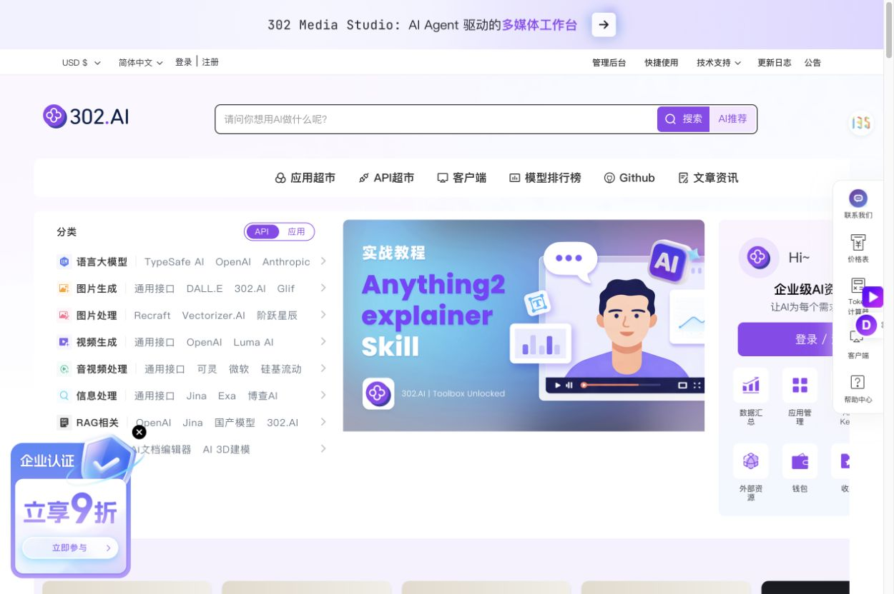
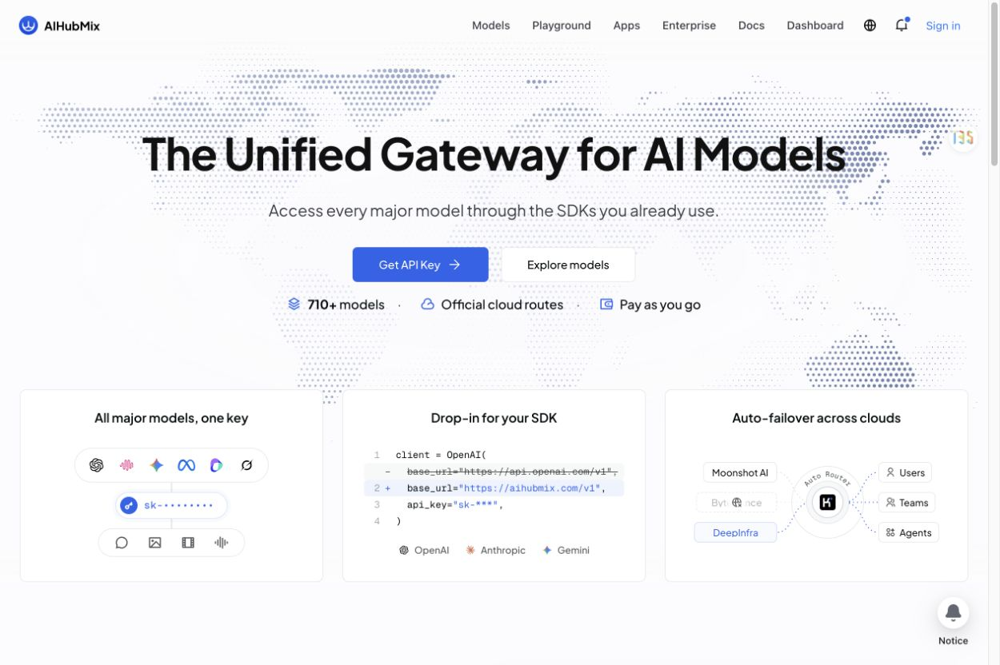
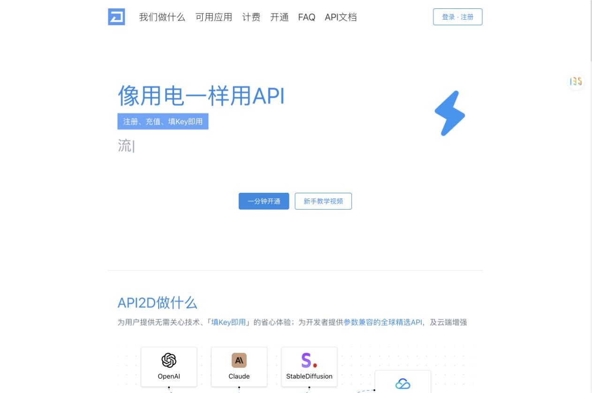
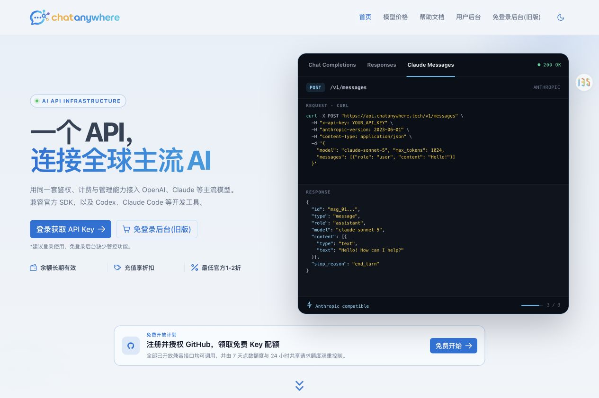
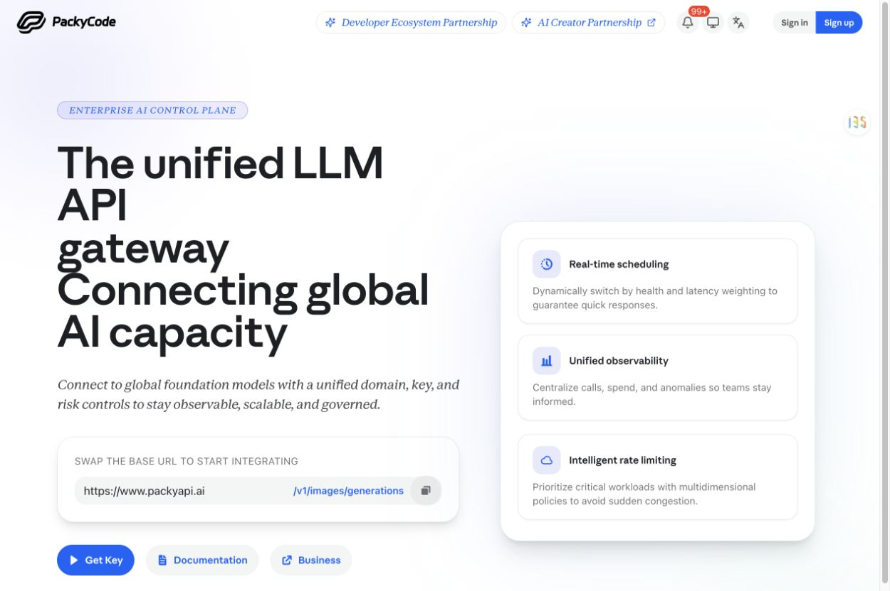
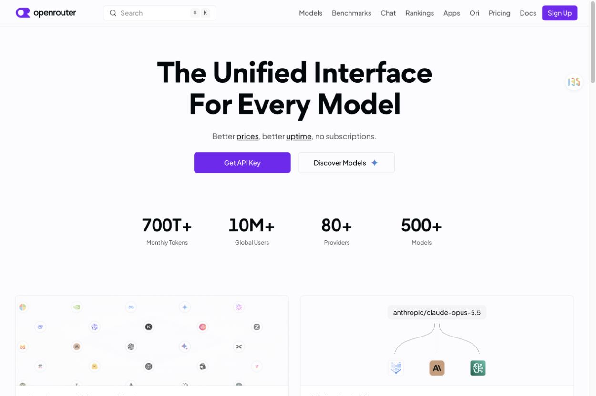
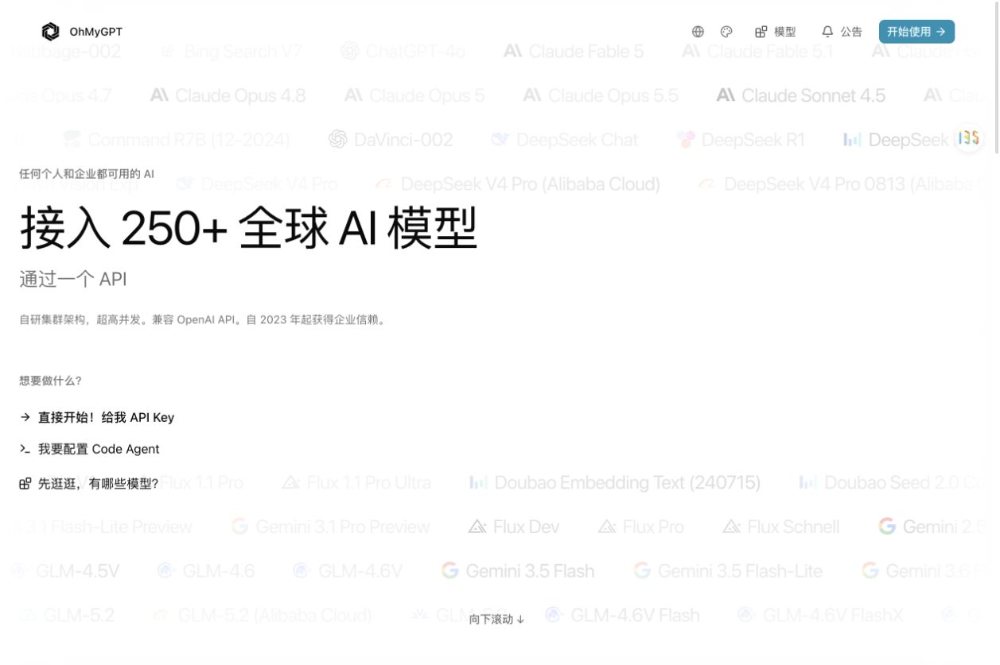
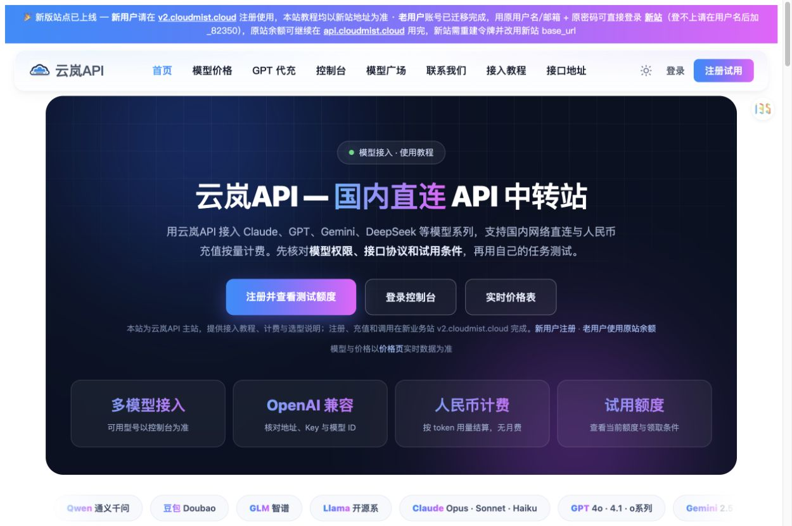
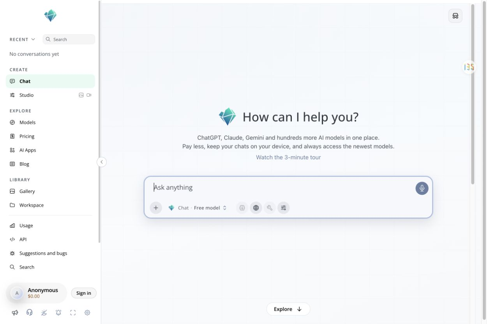
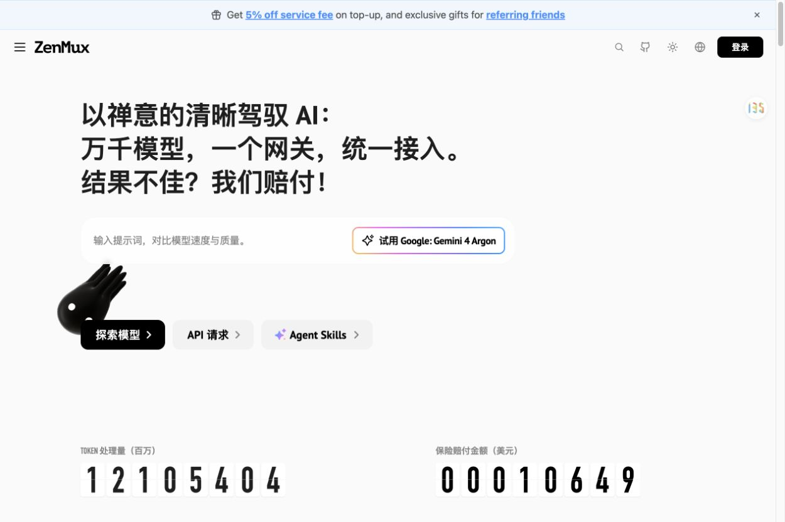

2026-10-26 · 基于同一日常 Chrome 的公开页面截图。只学习页面表达、服务结构和入口，不将各站的稳定率、价格或安全宣传视为实测事实。
结论：让用户立刻看懂服务品类、模型选择和中转路径，比单独放大品牌名更重要。

搜索、API 超市与应用分流。

统一网关定位，密钥、SDK 替换与路由图。

填 Key 即用，画清上游到应用的中转关系。

首屏呈现协议切换和请求 / 响应。

可复制地址与 Key / 文档入口靠前。

模型发现、Key 和路由是主要产品内容。

API、Agent、探索模型三条使用路径。

直连、人民币与计费说明明确。

直接聊天，并保留模型、账单和 API 入口。

模型试用 / API 分流，与公开观察入口。